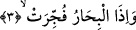

2. Yıldızlar döküldüğü,
“Yıldızlar dağılıp döküldüğü zaman.” Yani herhangi bir ipe dizilmiş inciler, o ipin
kopmasıyla darmadağın olduğu gibi yıldızlar, kendi yerlerinden dökülüp birer kara
nesne olarak dağıldığı zaman... Bu iki olay bir başka ifâdeyle göğün yarılıp yıldızların
dağılıp dökülmesi kıyamet alâmetlerindendir. Bunlar bizim üzerimizde olan gökyüzü ile
ilgili değişikliklerdir. Çünkü gökyüzü bu dünyada tavan, yeryüzü de taban
mesâbesindedir. Herhangi bir evi tahrib etmek isteyen buna öncelikle o evin tavanını
tahrible başlar. İşte “gök yarıldığı zaman” âyetiyle kasdedilen aynen bu anlamdır. Öte
yandan gökyüzünün tahribi demek, yıldızların dağılıp dökülmesi demektir.
Bu âyet-i kerimede zâhirî ve bâtınî on havas yıldızının dağılacağına, tabii ölümle
gideceğine işâret vardır. Çünkü ruhun ışığı, bedenin zâhir ve bâtınını aydınlatmaz hale
gelirse havas mutlak olarak faaliyetini sürdüremez. Nitekim mevt-i irâdi ile de aynı
durum meydana gelir.
3. Denizler birbirine katıldığı,
“Denizler birbirine katıldığı zaman.” Denizlerin arasındaki engelin ortadan
kalkması ve yine yeryüzü sarsılıp dümdüz oluşuyla birlikte engellerin kalkması üzere
denizler birbirine açılarak birtek deniz hâline geldiği zaman. Yeryüzündeki denizlerin
sayısı yedidir. Bunlar: Rum, Sılav, Cürcan, Kızıl, Fars, Çin, Hint denizidir. Bu denizler,
aradaki engelin kalkmasıyla bir tek deniz hâline gelecektir. Bu bir tek deniz, yedi yeri
sırtında taşıyan balığın karnına dökülecektir. Nitekim Keşfu’l-esrar’da böyle ifâde
olunmaktadır. Rivâyete göre yeryüzü denizlerin dolmasının ardından suyunu çekecek ve
dümdüz bir hale gelecektir. İşte Hasan Basrî’ye göre “tescir”in mânâsı budur.
Âyette yer alan ve denizler anlamına gelen “el-bihar” kelimesi içerisine atlas
okyanusu da dâhildir. Çünkü o bütün denizlerin aslı olup kalan bütün denizler bu
okyanustan dallanıp budaklanmıştır. Ayrıca bu denizler kavramına nehirlerin suları da
dâhildir. Çünkü nehirler de geniş olmaları göz önüne alınarak “bihar” sayılırlar.
Bu âyette ervah/ruhlar, esrar/sırlar ve kulub/kalpler denizlerine ve bunların tecellî-i
ahadî sâyesinde birbirine karışacaklarına ve bir tek deniz hâline geleceklerine işâret
vardır. Ayrıca bu âyette unsuri cisimlerin denizlerine de işâret edilmektedir. Bu unsurî
cisimlerin aralarındaki engelleyici berzahın ortadan kalkması sûretiyle birbirine
karışacaklarına ve tümünün kendi asıllarına gideceklerine işâret vardır. Burada sözünü
ettiğimiz ervah, ervah-ı hayvânidir ki bu bedenin harabına ve bedenin parçalarının
aslına dönmesine mânî olmaktadır.